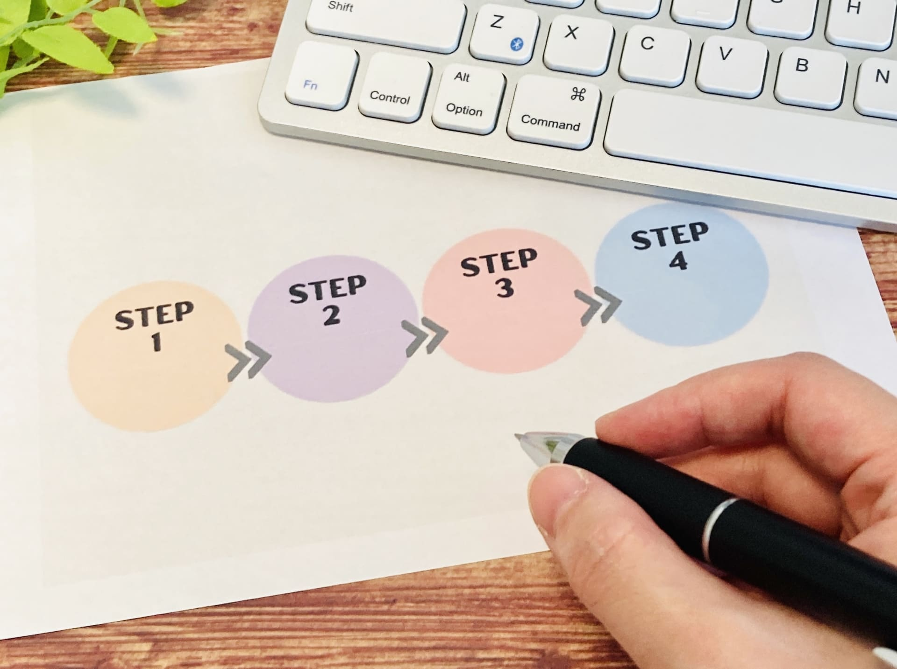

Profile
冨田 典子
1982年生まれ。既成曲を演奏することより、自作曲を演奏することに魅力を感じ、作曲の道を志しました。
2004年、東京藝術大学音楽学部を卒業後、幅広い視野を持つことと、音楽だけでなく英語も学びたく、文化庁新進芸術家海外留学制度2年派遣研修員としてイギリス留学も経験しました。
帰国後は、学んできたことを活かして作品発表や演奏会の企画、中高一貫校での音楽の講師として仕事をしました。
Web制作に興味を持ったきっかけは、長女が小学校入学前に、プログラミング教育必修化のニュースを見たことでした。
これからの子どもたちはプログラミング的思考力を身につける必要があることや、プログラミングの知識はWebサイトの制作や、アプリなど、身近にある様々なサービスの開発に繋がっていることを改めて学び、興味を持ちました。
また、Web制作の知識や技術は、身につけると音楽教室や演奏会の宣伝で力になれることに魅力を感じました。一から企画し、Webサイトを作り出してメッセージを伝えるところは作曲と共通点を感じています。
今後はWeb制作を通してお客様のご要望に寄り添い、より多くの人々に声や想いをお届けしていきたいです。
Strength
私の3つの強み
-
01 コミュニケーション力
これまでの仕事は、多くの人々と関わりながら、円滑なコミュニケーションを常に意識して活動を行ってきました。この経験は、お客さまのご要望を汲み取ったり、お仕事をさせていただく周囲の皆さまとコミュニケーションを取りながら制作物を作り上げていくときに活かせると考えています。
-
02 柔軟性
2年間のイギリス留学では、新しい環境に試行錯誤しながらも柔軟に対応しながら生活しました。お仕事の中で未知の問題に直面したときにどのようにしたら成果を上げることができるか粘り強く考えて行動することができます。
-

03 正確性
楽譜の制作や教材作りは細かい作業がとても多く、見ていただく方々に正確に意図が伝わるよう細部までこだわって作っていました。Web制作において、コードや文章に間違いや、使いづらさがないか確認、修正する作業も粘り強く取り組むことができます。
Questionnaire
パーソナルアンケート
-
Q
私の好きなこと
+ -
A
家庭菜園での野菜作り。旬の新鮮な野菜で料理をするのが好きです。
-
Q
最近の休日の過ごし方
+ -
A
ウォーキング・登山。子供と体力づくりをしています。
-
Q
好きな本
+ -
A
デザイン関係の本で様々なことを吸収しています。
-
Q
好きな音楽
+ -
A
J.S. バッハ。音楽の構造がWeb制作にも通じるものがあると感じています。
-
Q
尊敬する人
+ -
A
大学時代の恩師。いつも積極的に新しい企画を考え、行動を起こされていました。
-
Q
これまでの仕事で一番大変だったこと
+ -
A
30分のオーケストラ作品を吹奏楽に編曲したこと。数百ページにも及ぶ楽譜作りを一人で担当しました。
-
Q
これまでの仕事で一番嬉しかったこと
+ -
A
高校生への指導で、やる気が感じられなかった生徒が発表会で生き生きと演奏できるようになったこと。
-
Q
日々大切にしていること
+ -
A
一日一日、少しでも前進すること。